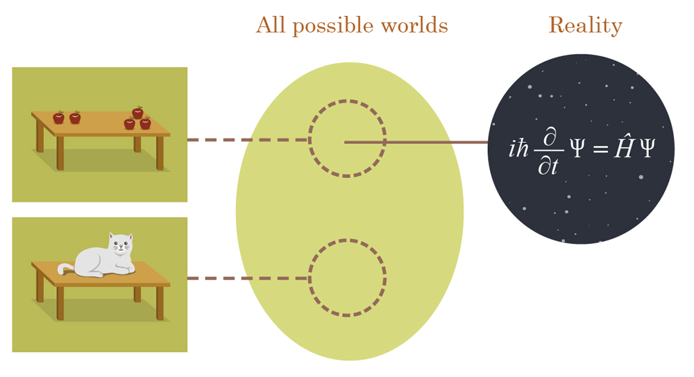
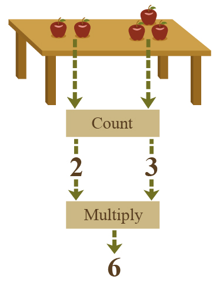
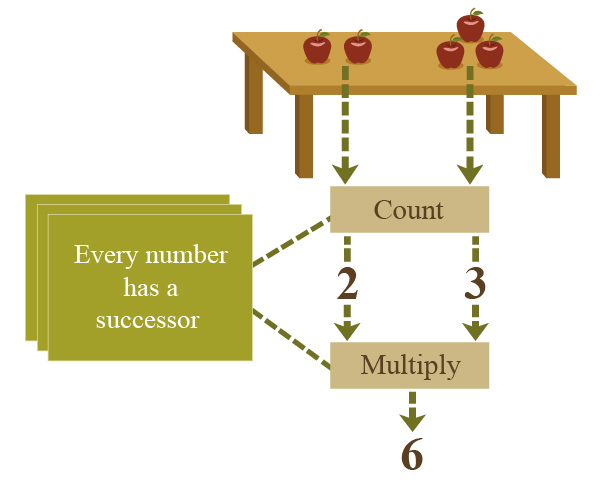
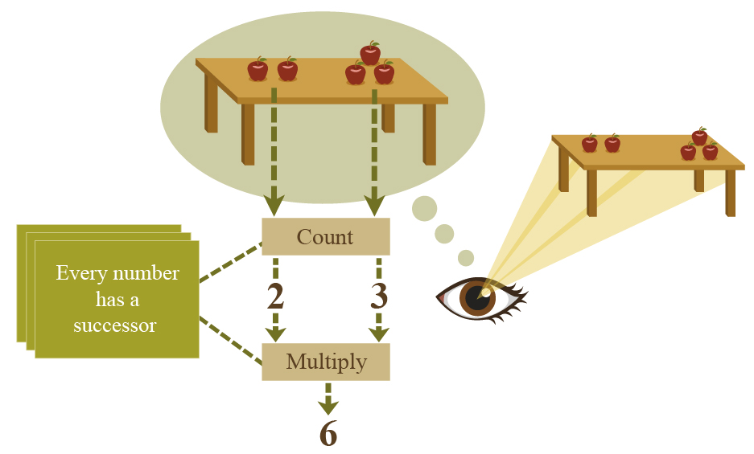
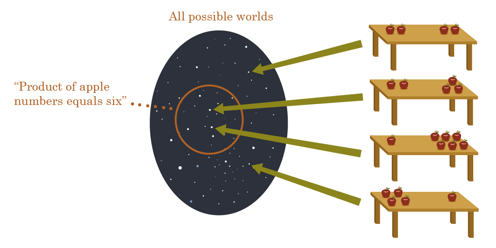
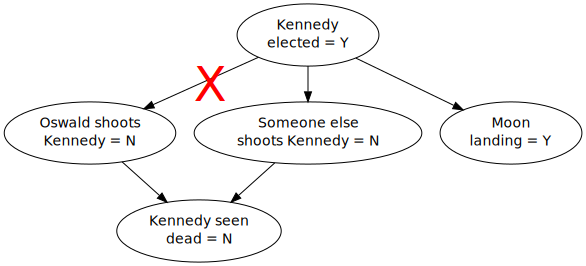

Followup to: Logical Pinpointing [http://lesswrong.com/lw/f4e/logical_pinpointing/], Causal Reference [http://lesswrong.com/lw/f1u/causal_reference/]
Take the universe and grind it down to the finest powder and sieve it through the finest sieve and then show me one atom of justice, one molecule of mercy.
- Death, in Hogfather by Terry Pratchett
Meditation: So far we've talked about two kinds of meaningfulness and two ways that sentences can refer; a way of comparing to physical things found by following pinned-down causal links, and logical validity by comparison to models pinned-down by axioms. Is there anything else that can be meaningfully talked about? Where would you find justice, or mercy?
...
...
...
Suppose that I pointed at a couple of piles of apples on a table, a pile of two apples and a pile of three apples.
And lo, I said: "If we took the number of apples in each pile, and multiplied those numbers together, we'd get six."
Nowhere in the physical universe is that 'six' written - there's nowhere in the laws of physics where you'll find a floating six. Even on the table itself there's only five apples, and apples aren't fundamental [http://lesswrong.com/lw/on/reductionism/]. Or to put it another way:
Take the apples and grind them down to the finest powder and sieve them through the finest sieve and then show me one atom of sixness, one molecule of multiplication.
Nor can the statement be true as a matter of pure math, comparing to some Platonic six within a mathematical model [http://lesswrong.com/lw/f43/proofs_implications_and_models/], because we could physically take one apple off the table and make the statement false, and you can't do that with math.
This question doesn't feel like it should be very hard. And indeed the answer is not very difficult, but it is worth spelling out; because cases like "justice" or "mercy" will turn out to proceed in a similar fashion.
Navigating to the six requires a mixture of physical and logical reference. This case begins with a physical reference, when we navigate to the physical apples on the table by talking about the cause of our apple-seeing experiences:
Next we have to call the stuff on the table 'apples'. But how, oh how can we do this, when grinding the universe and running it through a sieve will reveal not a single particle of appleness?
This part was covered at some length in the Reductionism [http://lesswrong.com/lw/on/reductionism/] sequence. Standard physics uses the same fundamental theory to describe the flight of a Boeing 747 airplane, and collisions in the Relativistic Heavy Ion Collider. Nuclei and airplanes alike, according to our understanding, are obeying special relativity, quantum mechanics, and chromodynamics.
We also use entirely different models to understand the aerodynamics of a 747 and a collision between gold nuclei in the RHIC. A computer modeling the aerodynamics of a 747 may not contain a single token, a single bit of RAM, that represents a quark. (Or a quantum field, really; but you get the idea.)
So is the 747 made of something other than quarks? And is the statement "this 747 has wings" meaningless or false? No, we're just modeling the 747 with representational elements that do not have a one-to-one correspondence with individual quarks.
Similarly with apples. To compare a mental image of high-level apple-objects to physical reality, for it to be true under a correspondence theory of truth, doesn't require that apples be fundamental in physical law. A single discrete element of fundamental physics is not the only thing that a statement can ever be compared-to. We just need truth conditions that categorize the low-level states of the universe, so that different low-level physical states are inside or outside the mental image of "some apples on the table" or alternatively "a kitten on the table".

Now we can draw a correspondence from our image of discrete high-level apple objects, to reality.
Next we need to count the apple-objects in each pile, using some procedure along the lines of going from apple to apple, marking those already counted and not counting them a second time, and continuing until all the apples in each heap have been counted. And then, having counted two numbers, we'll multiply them together. You can imagine this as taking the physical state of the universe (or a high-level representation of it) and running it through a series of functions leading to a final output:

And of course operations like "counting" and "multiplication" are pinned down by the number-axioms of Peano Arithmetic:

And we shouldn't forget that the image of the table, is being calculated from eyes which are in causal contact with the real table-made-of-particles out there in physical reality:

And then there's also the point that the Peano axioms themselves are being quoted inside your brain in order to pin down the ideal multiplicative result - after all, you can get multiplications wrong - but I'm not going to draw the image for that one. (We tried, and it came out too crowded.)
So long as the math is pinned down, any table of two apple piles should yield a single output when we run the math over it. Constraining this output constrains the possible states of the original, physical input universe:

And thus "The product of the apple numbers is six" is meaningful, constraining the possible worlds. It has a truth-condition, fulfilled by a mixture of physical reality and logical validity; and the correspondence is nailed down by a mixture of causal reference and axiomatic pinpointing.
I usually simplify this to the idea of "running a logical function over the physical universe", but of course the small picture doesn't work unless the big picture works.
The Great Reductionist Project can be seen as figuring out how to express meaningful sentences in terms of a combination of physical references (statements whose truth-value is determined by a truth-condition directly correspnding to the real universe we're embedded in) and logical references (valid implications of premises, or elements of models pinned down by axioms); where both physical references and logical references are to be described 'effectively' or 'formally', in computable or logical form. (I haven't had time to go into this last part but it's an already-popular idea in philosophy of computation.)
And the Great Reductionist Thesis can be seen as the proposition that everything meaningful can be expressed this way eventually.
But it sometimes takes a whole bunch of work.
And to notice when somebody has subtly violated the Great Reductionist Thesis - to see when a current solution is not decomposable to physical and logical reference - requires a fair amount of self-sensitization before the transgressions become obvious.
Example: Counterfactuals.
Consider the following pair of sentences, widely used to introduce the idea of "counterfactual conditioning":
- (A) If Lee Harvey Oswald didn't shoot John F. Kennedy, someone else did.
- (B) If Lee Harvey Oswald hadn't shot John F. Kennedy, someone else would've.
The first sentence seems agreeable - John F. Kennedy definitely was shot, historically speaking, so if it wasn't Lee Harvey Oswald it was someone. On the other hand, unless you believe the Illuminati planned it all, it doesn't seem particularly likely that if Lee Harvey Oswald had been removed from the equation, somebody else would've shot Kennedy instead.
Which is to say that sentence (A) appears true, and sentence (B) appears false.
One of the historical questions about the meaning of causal models - in fact, of causal assertions in general - is, "How does this so-called 'causal' model of yours, differ from asserting a bunch of statistical relations? Okay, sure, these statistical dependencies have a nice neighborhood-structure, but why not just call them correlations with a nice neighborhood-structure; why use fancy terms like 'cause and effect'?"
And one of the most widely endorsed answers, including nowadays, is that causal models carry an extra meaning because they tell us about counterfactual outcomes, which ordinary statistical models don't. For example, suppose this is our causal model of how John F. Kennedy got shot:

Roughly this is intended to convey the idea that there are no Illuminati: Kennedy causes Oswald to shoot him, does not cause anybody else to shoot him, and causes the Moon landing; but once you know that Kennedy was elected, there's no correlation between his probability of causing Oswald to shoot him and his probability of causing anyone else to shoot him. In particular, there's no Illuminati who monitor Oswald and send another shooter if Oswald fails.
In any case, this diagram also implies that if Oswald hadn't shot Kennedy, nobody else would've, which is modified by a counterfactual surgery a.k.a. the do(.) operator, in which a node is severed from its former parents, set to a particular value, and its descendants then recomputed:

And so it was claimed that the meaning of the first diagram is embodied in its implicit claim (as made explicit in the second diagram) that "if Oswald hadn't shot Kennedy, nobody else would've". This statement is true, and if all the other implicit counterfactual statements are also true, the first causal model as a whole is a true causal model.
What's wrong with this picture?
Well... if you're strict about that whole combination-of-physics-and-logic business... the problem is that there are no counterfactual universes for a counterfactual statement to correspond-to. "There's apples on the table" can be true when the particles in the universe are arranged into a configuration where there's some clumps of organic molecules on the table. What arrangement of the particles in this universe could directly make true the statement "If Oswald hadn't shot Kennedy, nobody else would've"? In this universe, Oswald did shoot Kennedy and Kennedy did end up shot.
But it's a subtle sort of thing, to notice when you're trying to establish the truth-condition of a sentence by comparison to counterfactual universes that are not measurable, are never observed, and do not in fact actually exist.
Because our own brains carry out the same sort of 'counterfactual surgery' automatically and natively - so natively that it's embedded in the syntax of language. We don't say, "What if we perform counterfactual surgery on our models to set 'Oswald shoots Kennedy' to false?" We say, "What if Oswald hadn't shot Kennedy?" So there's this counterfactual-supposition operation which our brain does very quickly and invisibly to imagine a hypothetical non-existent universe where Oswald doesn't shoot Kennedy, and our brain very rapidly returns the supposition that Kennedy doesn't get shot, and this seems to be a fact like any other fact; and so why couldn't you just compare the causal model to this fact like any other fact?
And in one sense, "If Oswald hadn't shot Kennedy, nobody else would've" is a fact; it's a mixed reference that starts with the causal model of the actual universe where there are actually no Illuminati, and proceeds from there to the logical operation of counterfactual surgery to yield an answer which, like 'six' for the product of apples on the table, is not actually present anywhere in the universe. But you can't say that the causal model is true because the counterfactuals are true. The truth of the counterfactuals has to be calculated from the truth of the causal model, followed by the implications of the counterfactual-surgery axioms. If the causal model couldn't be 'true' or 'false' on its own, by direct comparison to the actual real universe, there'd be no way for the counterfactuals to be true or false either, since no actual counterfactual universes exist.
So that business of counterfactuals may sound like a relatively obscure example (though it's going to play a large role in decision theory later on, and I expect to revisit it then) but it sets up some even larger points.
For example, the Born probabilities [http://lesswrong.com/lw/py/the_born_probabilities/] in quantum mechanics seem to talk about a 'degree of realness' that different parts of the configuration space have (proportional to the integral over squared modulus of that 'world').
Could the Born probabilities be basic - could there just be a basic law of physics which just says directly that to find out how likely you are to be in any quantum world, the integral over squared modulus gives you the answer? And the same law could've just as easily have said that you're likely to find yourself in a world that goes over the integral of modulus to the power 1.99999?
But then we would have 'mixed references' that mixed together three kinds of stuff - the Schrodinger Equation, a deterministic causal equation relating complex amplitudes inside a configuration space; logical validities and models; and a law which assigned fundamental-degree-of-realness a.k.a. magical-reality-fluid. Meaningful statements would talk about some mixture of physical laws over particle fields in our own universe, logical validities, and degree-of-realness.
This is just the same sort of problem if you say that causal models are meaningful and true relative to a mixture of three kinds of stuff, actual worlds, logical validities, and counterfactuals, and logical validities. You're only supposed to have two kinds of stuff.
People who think qualia are fundamental are also trying to build references out of at least three different kinds of stuff: physical laws, logic, and experiences.
Anthropic problems [http://lesswrong.com/r/lesswrong/lw/19d/the_anthropic_trilemma/] similarly revolve around a mysterious degree-of-realness, since presumably when you make more copies of people, you make their experiences more anticipate-able somehow. But this doesn't say that anthropic questions are meaningless or incoherent. It says that since we can only talk about anthropic problems using three kinds of stuff, we haven't finished Doing Reductionism to it yet. (I have not yet encountered a claim to have finished Reducing anthropics which (a) ends up with only two kinds of stuff and (b) does not seem to imply that I should expect my experiences to dissolve into Boltzmann-brain chaos in the next instant [http://lesswrong.com/lw/17d/forcing_anthropics_boltzmann_brains/], given that if all this talk of 'degree of realness' is nonsense, there is no way to say that physically-lawful copies of me are more common than Boltzmann brain copies of me.)
Or to take it down a notch, naive theories of free will [http://wiki.lesswrong.com/wiki/Free_will] can be seen as obviously not-completed Reductions when you consider that they now contain physics, logic, and this third sort of thingy called 'choices'.
And - alas - modern philosophy is full of 'new sorts of stuff'; we have modal realism that makes possibility a real sort of thing, and then other philosophers appeal to the truth of statements about conceivability without any attempt to reduce conceivability into some mixture of the actually-physically-real-in-our-universe and logical axioms; and so on, and so on.
But lest you be tempted to think that the correct course is always to just envision a simpler universe without the extra stuff, consider that we do not live in the 'naive un-free universe' in which all our choices are constrained by the malevolent outside hand of physics, leaving us as slaves - reducing choices to physics is not the same as taking a naive model with three kinds of stuff, and deleting all the 'choices' from it. This is confusing the project of getting the gnomes out of the haunted mine, with trying to unmake the rainbow. Counterfactual surgery was eventually given a formal and logical definition, but it was a lot of work to get that far - causal models had to be invented first, and before then, people could only wave their hands frantically in the air when asked what it meant for something to be a 'cause'. The overall moral I'm trying convey is that the Great Reductionist Project is difficult; it's not a matter of just proclaiming that there's no gnomes in the mine, or that rainbows couldn't possibly be 'supernatural'. There are all sorts of statement that were not originally, or are presently not obviously decomposable into physical law plus logic; but that doesn't mean you just give up immediately. The Great Reductionist Thesis is that reduction is always possible eventually. It is nowhere written that it is easy, or that your prior efforts were enough to find a solution if one existed.
Continued next time with justice and mercy (or rather, fairness and goodness). Because clearly, if we end up with meaningful moral statements, they're not going to correspond to a combination of physics and logic plus morality.
Mainstream status [http://lesswrong.com/lw/frz/mixed_reference_the_great_reductionist_project/#7z44].
Part of the sequence Highly Advanced Epistemology 101 for Beginners [http://wiki.lesswrong.com/wiki/Highly_Advanced_Epistemology_101_for_Beginners]
Next post: "By Which It May Be Judged [http://lesswrong.com/lw/fv3/by_which_it_may_be_judged/]"
Previous post: "Causal Universes [http://lesswrong.com/lw/fok/causal_universes/]"